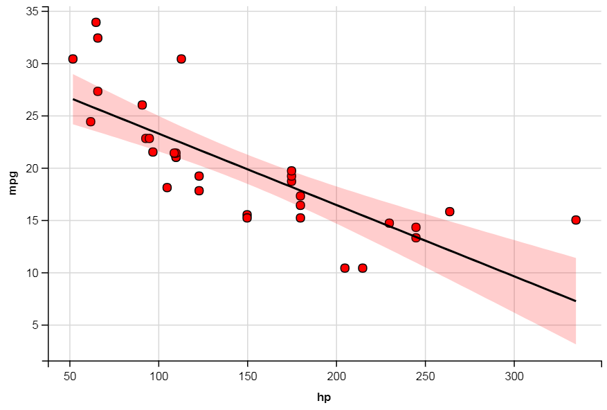

5 Web scraping, interactive graphics, Shiny Apps, package building, and more
5.1 Packages
Install the new packages
rvestandggvis. It will also be worth installingreadrandpurrr.Load in the new packages and
ggplot2:
##
## Attaching package: 'ggvis'## The following object is masked from 'package:ggplot2':
##
## resolution## Loading required package: xml2##
## Attaching package: 'rvest'## The following object is masked from 'package:purrr':
##
## pluck## The following object is masked from 'package:readr':
##
## guess_encoding5.2 Collecting data
So far the data we’ve used in the labs has been provided for you. More importantly, it’s been given to you in a nice format (e.g. no missing values). In practice you’ll find that most data are messy and that analysing real data requires you to spend time cleaning and manipulating the data into a useable form before you can do your analysis.
One of the best sources of data is the internet. There are now over a billion websites containing data on almost anything you can think of (e.g. income, world poverty, property values, film releases, etc.).
5.2.1 Simple scraping
In the first lab we looked at a dataset containing information about planets in our solar system. In that exercise we input that data manually. However, we can obtain these data by scraping the data directly from the web.15
The rvest package from Hadley Wickham will allow us to read the data directly from the website. So let’s try it out. Start by loading the package if you haven’t already.
Once we’ve found a good website containing the data we want, we can scrape the data from the website and store it in a data.frame object
html <- read_html("http://nssdc.gsfc.nasa.gov/planetary/factsheet/")
html_data <- html_node(html, "table") # extract parts of HTML text
planet_data <- html_table(html_data, header=TRUE) # display table
head(planet_data)## MERCURY VENUS EARTH MOON MARS JUPITER SATURN
## 1 Mass (1024kg) 0.330 4.87 5.97 0.073 0.642 1898 568
## 2 Diameter (km) 4879 12,104 12,756 3475 6792 142,984 120,536
## 3 Density (kg/m3) 5427 5243 5514 3340 3933 1326 687
## 4 Gravity (m/s2) 3.7 8.9 9.8 1.6 3.7 23.1 9.0
## 5 Escape Velocity (km/s) 4.3 10.4 11.2 2.4 5.0 59.5 35.5
## 6 Rotation Period (hours) 1407.6 -5832.5 23.9 655.7 24.6 9.9 10.7
## URANUS NEPTUNE PLUTO
## 1 86.8 102 0.0146
## 2 51,118 49,528 2370
## 3 1271 1638 2095
## 4 8.7 11.0 0.7
## 5 21.3 23.5 1.3
## 6 -17.2 16.1 -153.3Essentially we’re going to be working with four main functions:
read_html()- used to set the webpage addresshtml_node()/html_nodes()- select which parts of the website you want to scrapehtml_table()- convert an HTML table into adata.frameobjecthtml_text()- extract HTML text.
Used correctly, these functions will allow you to scrape data from alot of websites. However, as you can imagine, the more complex the design of the website, the harder it will be to identify what you’re looking for.
You may find the https://selectorgadget.com tool particularly useful. This tool can be added as an extension to Google Chrome.16 When activated you can simply hover your mouse over the section of the website you want to scrape and the selectorgadget tool will tell you what the xpath/CSS link is.
Piping is also helpful when running web scraping code. Piping allows you to direct the output from one function to another and then another and then another, etc. by using the \%>\% operator from the dplyr package. As an example, here in an alternative way of implementing the above:
planet_data <-
read_html("http://nssdc.gsfc.nasa.gov/planetary/factsheet/") %>%
html_node("table") %>%
html_table(header=TRUE)You’ll notice by comparing the two implementations, that function(a, b) is equivalent to a %>% function(b). We are plugging our variable into the first argument of the function. If instead we want function(b, a), then we’ll need to use the form a %>% function(b,.).
5.2.2 Exercise
The planets dataset contains many unwanted characters (e.g. *, commas, words). Use regular expressions and string processing operations, to remove these to create a clean dataset.
5.2.3 Google Scholar
Google scholar is a helpful resource for finding academic works. In addition to finding journal articles, you can also find profiles of researchers and see what they work on, the papers they publish, how influential they are, and who they work with.
Let’s consider the Google Scholar page of Peter Diggle, Lancaster University Distiguished University Professor of Statistics.
On the Google Scholar page there are several tables. There is a summary of the researcher’s output (top right). The main table contains the details of each of the researcher’s papers. Let’s scrape these two tables (remember the . indicates the contents from the pipe so far).
overview <- page %>%
html_nodes("table") %>%
.[[1]] %>%
html_table()
citations <- page %>%
html_nodes("table") %>%
.[[2]] %>%
html_table() %>%
.[-1,2] %>%
readr::parse_number()- The first operation is straightforward. We’re simply scraping the first list element (i.e.
[[1]]), which is a table from the webpage. - The second line is a little trickier with two additional operations. Firstly, we’re using
[-1,2]to remove the first row of the table and select the second column, just the citations.
Figure 5.1: The citations of Prof. Diggle’s papers
You’ll often find in practice, especially when working with web scraping, that data isn’t always presented in the most convenient way.
- The last operation,
readr::parse_number(), is simply stripping everything out that isn’t numeric.17
We have obtained some of the information on the webpage.
## All Since 2015
## 1 Citations 49623 16473
## 2 h-index 86 53
## 3 i10-index 270 199## [1] 11806 5286 3389 1391 1379 1251Researchers almost never publish alone and will work with numerous collaborators, often across various disciplines. Prof. Diggle is no exception, let’s have a look at some of his co-authors. Remember that the selectorgadget Chrome extension can help you find the name of the CSS tag you need to provide to html_nodes(). Another way is to press Ctrl+Shift+I in Chrome and view the HTML source code. Remember also that websites are frequently updated and so the next time you run this code it will fail if Google have changed the Google Scholar HTML code.
Coauthors = page %>%
html_nodes(css=".gsc_rsb_a_desc a") %>%
html_text()
Coauthors = as.data.frame(Coauthors)
names(Coauthors)='Coauthors'
head(Coauthors)## [1] Coauthors
## <0 rows> (or 0-length row.names)5.3 Alternative graphics
5.3.1 Introducing ggvis
By now we are familiar with using the ggplot2 package instead of the base R graphics engine to produce figures. Now we’re going to look at another package, ggvis, which you’ll notice has the same graph building philosophy, albeit with a slightly different syntax. Install the package and then load it,
We’re going to practice some of the basics of ggvis with a demo dataset that can be found in the R base package. The mtcars dataset contains data on 32 cars from 1973–74. Let’s start by plotting the horsepower against the miles per gallon.
# first layer is the points of a scatter plot
# second layer is a simple linear model,
# SE=TRUE displays confidence bans around the predictions
mtcars %>%
ggvis(~hp, ~mpg, fill := "red", stroke := "black") %>%
layer_points() %>%
layer_model_predictions(model="lm", se=TRUE) This plot can be broken down into smaller components in the same as ggplot graphics are built-up from smaller components. We’re plotting the data and overlaying a straight line, which is the prediction from a linear model that we’ve fitted to the data. We have also added pointwise 95% confidence interval bands to our linear model.
 Horsepower is related to the number of cylinders in the engine. So let’s group the data into number of cylinders and then, treating each group independently, fit a new linear model. Therefore, we are fitting a piecewise linear model.
#piecewise linear
mtcars %>%
ggvis(~wt, ~mpg, fill = ~factor(cyl)) %>%
layer_points() %>%
group_by(cyl) %>%
layer_model_predictions(model = "lm", se=TRUE)
# the group_by(cyl) tells next layer to group by cylinder factorThe plot shows three separate lines, with their corresponding 95% confidence intervals.
Figure 5.2: Piecewise linear model plot using ggvis.
5.3.2 Interactive/responsive graphics
You might be wondering, why should I use ggvis when I can use ggplot? One of the main advantages of ggvis is that you can make your graphics interactive (they will be viewed with a browser to achieve this). This can be particularly cool if you want to embed your graphics in a responsive web environment, or you wish to manipulate features of the plot to gain a deeper insight into the data you’re plotting.
The following code generates a basic interactive plot.
# In this plot we have:
# a smoothing layer with input selection for span
# and a point layer with input selection for size
mtcars %>%
ggvis(~wt, ~mpg, fill := "purple", stroke := "black") %>%
layer_smooths(span = input_slider(0.5, 1, value = 1)) %>%
layer_points(size := input_slider(100, 1000, value = 100))
Figure 5.3: Interactive plot using ggvis. When viewed in the RStudio Viewer or in a web browser you can move the sliders at the bottom with your mouse.
This particular plot has two sliders which you can play with to:
- adjust the size of the data points;
- adjust the smoothness of the line.
If you decrease the smoothness, then the line will start to become more wobbly and intersect more points, whereas if you increase the smoothness, the line will instead capture the general shape of the data, rather than specific points.
Note the message in the RStudio Console “Showing dynamic visualisation. Press Escape/Ctrl + C to stop”. You must press either of these key combinations, or the Stop icon in the RStudio Viewer, to continue submitting R commands in your R session.
When modelling a dataset we often make assumptions about how the data is generated. For example, do the residuals follow an underlying Normal distribution, and if so, can we estimate it’s parameters. Alternatively, the data may be distributed as a Poisson, Gamma, or Chi-squared distribution. It’s not always appropriate to assume that the data fits some pre-specified distributional family, especially if we don’t have a lot of data. Instead, we may want to model the data without making such distributional assumptions. In statistics this is known as nonparametrics, and the most common type of nonparametric density estimation is kernel density estimation. Further details can be found here https://en.wikipedia.org/wiki/Kernel_density_estimation.
Essentially kernel density estimation replaces each data point with a kernel function (e.g. Gaussian, Epanechnikov), and aims to approximate the underlying population density by smoothing your data (which is assumed to be a sample from the population).
Run the code below and see what happens when you change the kernel function and smoothing parameter (more commonly known as the bandwidth).
# In this plot we have an input slider to select the bandwidth of smoother
mtcars %>%
ggvis(~wt) %>%
layer_densities(
adjust = input_slider(.1, 2, value = 1, step = .1,
label = "Bandwidth adjustment"),
kernel = input_select(
c("Gaussian" = "gaussian",
"Epanechnikov" = "epanechnikov",
"Rectangular" = "rectangular",
"Triangular" = "triangular",
"Biweight" = "biweight",
"Cosine" = "cosine",
"Optcosine" = "optcosine"),
label = "Kernel")
)
Figure 5.4: Another interactive plot using ggvis.
The plot allows you to choose which kernel you are using and also to adjust the bandwidth. This is much more convenient than plotting many different plots.
5.4 Shiny Web Applications
The team behind RStudio have created an application framework which allows the user to create web pages which R code. One example, of this is we can create interactive plots like those generated by ggvis.
To create a new app in RStudio follow this procedure:
- click the New icon | Shiny Web App…
- Give yours a name with no spaces such as ``example-shiny-app’’.
- Choose the single of multiple file approach to coding the app (it doesn’t really matter which you choose)
- and choose which directory (folder) that you want to make it in.
If you chose the single file approach you now get a single file called app.R to edit. However the placeholder code provided by RStudio will actually run. Click the “Run App” button in the top right corner of the Source pane. RStudio will open a new Viewer window running the app.
Figure 5.5: Example Shiny App by RStudio.
As with the ggvis interactive plots you see that you can move the slider with your mouse and R recalculates and redraws the plot. Experiment with moving the slider.
Shiny Apps are very flexible because they need not just produce plots but they provide Web frontends to any type of R code. So you could be providing access to web scraping code or access to a database.
Inspect the structure of the code. It is very simple. There are two main functions ui() (which stands for user-interface) and server() which is the part of the code doing the computation/plots. You would edit these functions to perform the task you needed to achieve.
Whilst your app is running you will notice that the RStudio console reports “Listening on http://127.0.0.1:4122”. In order to be able to resume your R session you must close the window your app is running in.
5.4.1 Other RStudio features we haven’t covered
RStudio has many features we haven’t covered. It has brilliant features when you are building your own package (personally I would never build a package outside of RStudio anymore). When building a package and some other tasks you need the RStudio “Build” pane. To see this I think you must define the top level directory for your package (or bookdown book etc.) as an RStudio project. This creates an .Rproj file in the directory which RStudio detects and then shows the Build pane.
RStudio can also run Sweave documents (which contain both LaTeX and R code) and also many types of presentation including LaTeX beamer and RStudio’s .Rpres format.
5.5 Rmarkdown HTML notebooks and Ipython/Jupyter notebooks
An advanced type of Rmarkdown document is an “R Notebook”. These are R markdown files with the output in the YAML header defined as
output:
html_notebook: defaultWhen you first save an Rmarkdown file with this output definition its output file with extension .nb.html is created immediately (even if you have not evaluated any of your code blocks).
The .nb.html file format is very clever because it actually contains the Rmarkdown code as well as the html output. Therefore, if you open an .nb.html file in RStudio it will show the associated .Rmd code even if you don’t have that separate file.
The R output shown in the .nb.html file is the output from the code blocks which have been run, i.e. if you have not evaluated all of the R code blocks in your Rmd file then not all of the output will be present in the .nb.html file.
The other main notebook format used in Data Science are Ipython/Jupyter notebooks http://jupyter.org/. These keep the R read-evaluation-print-loop running in the background so you can evaluate one cell of code at a time live in your browser. A screen shot of an example notebook is shown at side of the page.
Figure 5.6: Example Jupyter notebook.
To try a Jupyter notebook without having to install it on your local machine, you can try it in a browser at https://try.jupyter.org/. However, my personal experience of this website is not good. Either the R kernel dies or you cannot get a space to launch a notebook. Running Jupyter notebooks on my own machine has been reliable.
If you want to try such notebooks installation instructions are here: http://jupyter.org/install.html. This is easiest to do on your own computer. If you are on a University Windows network computer these will probably fail. One element of getting Jupyter notebooks running is installing the IPython/Jupyter R kernel (the notebooks can use kernels for other languages such as Python, Julia, and many other languages). Instructions can be found here https://irkernel.github.io/installation/.
5.6 Exercise: Housing in New York City
We’ve now covered the basics of the rvest and ggvis packages. We’re now going look at combining these packages, along with others (including dplyr) to perform statistical analysis on dataset we have scraped from the web.
If you have installed the tidyverse package hopefully that has given you the purrr and readr packages already.
New York city contains some of the most expensive property in the world, particularly Manhattan. The property market is a rich source of data which contains many interesting nuances. For example, just because a property is big, doesn’t mean it’s expensive.
Have a look at https://www.zillow.com to get an idea of its layout. Try searching for some property, anywhere in the USA will do, and you’ll notice that the web page of the search results is split into two halves. There’s a map and a series of photo cards. Pulling data from the map, or overlaying data onto a map is possible with the ggvis package, but a little beyond what we’re going to cover today.18
Instead we’re going to focus on the photo cards which contain textual information.
The code below will extract the address, price, size, and the number of bedrooms and bathrooms of each property in the search results:
# Note that this web address is quite long here so I've split it
# over several lines using paste0(), but you could just have it on the same line
page <- read_html(paste0("http://www.zillow.com/homes/for_sale/", "Manhattan-New-York-NY/12530_rid/globalrelevanceex_sort/", "40.894829,-73.795167,40.664754,-74.151879_rect/11_zm/1_p/"))
# extract html details from the photo cards
houses <- page %>%
html_nodes(".photo-cards li article")
address <- houses %>%
html_node(".zsg-photo-card-address") %>%
html_text() %>%
gsub(',','',.) %>%
gsub('\\s','_',.)
price <- houses %>%
html_node(".zsg-photo-card-price") %>%
html_text() %>%
readr::parse_number()
params <- houses %>%
html_node(".zsg-photo-card-info") %>%
html_text() %>%
strsplit("\u00b7")
beds <- params %>%
purrr::map_chr(1) %>%
gsub('\\D','',.)
baths <- params %>%
purrr::map_chr(2) %>%
readr::parse_number()
house_area <- params %>%
purrr::map_chr(3) %>%
gsub('\\D','',.)
ny_housing <- data.frame(address, price, beds, baths, house_area)You may get some warnings when you run this code. Let’s ignore those for the moment. You’ll find scraping data from website is never trivial. Web developers design their sites to be pretty and not scraper friendly. Companies that specialise in web scraping spend a significant portion of their time updating scrapers when websites are updated.
Your task is to utilise what you’ve learnt over the past few weeks to perform some statistical analyses on these data. Here are some suggestions for things to explore.
- It’s always a good idea to take a look at the data. The two most obvious functions to use here would be
View()andhead(). - It’s also a good idea to look at some simple summary statistics, such as mean, median, max, etc. Another useful function for summarising your data is
summary(). Note that this function will only work on numeric class data. If there are any non-numeric values in your data fix your data frame so that the appropriate columns are of class numeric. - You’ll notice that in the raw data that “Studio” often appears under “number of bedrooms”, really we’d want a number so that we can do summaries on the data. Here I’ve just removed anything that’s not a number, can you do something better?
- As we saw with the Google Scholar data, when we scrape data from a website we’re only scraping what is on that particular page. This is fine, but if the data we want is over multiple pages then we need to be clever. Try to use a
forloop to loop over each webpage and scrape the data you want. Hint: Most websites follow a logical naming and numbering structure. - Create an interactive
ggvisplot to explore one or more variables. - As I’ve already mentioned, location is a very important factor. The longitude and latitude for each property is availble (hint: look at
houses[[1]]). Can you extract this data and plot the search results either on a grid or map and highlight the expensive parts of the city?
R was not really designed for this sort of task. Other programming languages, such as Python, are generally better for web scraping.↩
Search for this in the Chrome Web Store https://chrome.google.com/webstore/category/extensions↩
You can think of the
readr::parse_number()function as a more advanced version ofas.numeric().↩Location is an important factor when determining price so filtering properties based on area would certainly be interesting.↩